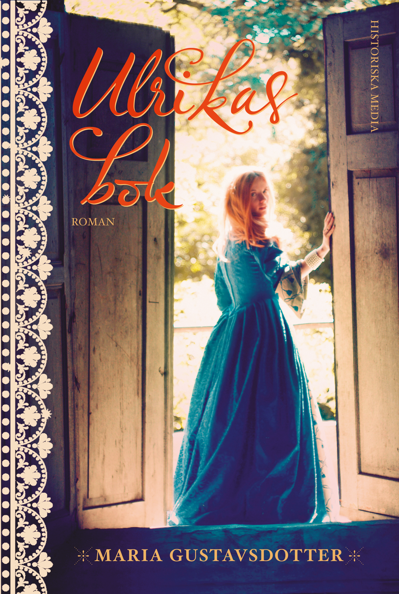
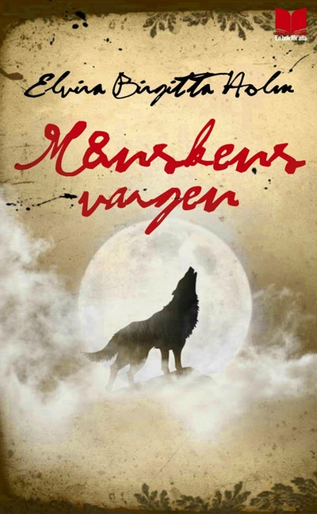

Genre: Historisk Roman.
Boken handlar om en prästdotter som heter Ulrika som tröttnar på sin familj och rymmer hemifrån tillsammans med sin vän Andreas, Efter en kort tid är Ulrika ensam och övergiven, skammen gör att hon inte vågar återvända till sin familj så hon fortsätter sin resa och försöker överleva så gott hon kan. Snart möter hon en säregen grupp gycklare och hamnar mitt i ett krigshärjat Uddevalla som hon där tvingas än en gång att fly och hon är på nytt lämnad åt sitt öde och utan mål.

Genre: Romantik, Äventyr och Historia.
Månskensvargen handlar om femtonåriga Ylva Ulvsdotter som flyr ifrån pesten efter att ha sett att hela hennes by har dött av pesten, Ensam med bara sin hund Vargtass så flyr hon till skogen. I skogen så hittar hon en stum man som ser ut att vara i ungefär samma ålder som henne själv, Han försöker kommunicera med henne igenom text men eftersom Ylva inte kan läsa eller skriva så förstår hon inte vad han försöker att visa. Mannen heter Mikael, han är en rikemans son från visby han flydde på grund av att hans pappa hade blivit mördad. Tillsammans försöker de överleva ensamma eftersom dom tror att alla är döda.

Det utspelar sig under medeltiden år 1350.
Boken visar hur det kunde se ut när pesten dominerade.
I boken så får man se hur stor skillnaden var mellan fattiga och rika som till exempel Ylva som var fattig kunde inte läsa eller skriva medans Mikael som kom från en rik familj kunde läsa och skriva.